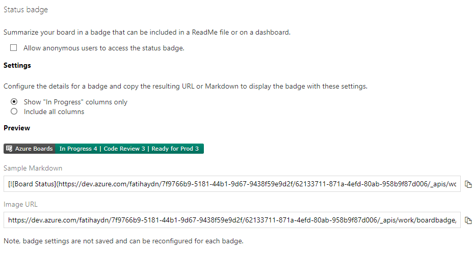

Azure DevOps Status Badge
Azure DevOps Boards'da "Durum Rozeti" ayarlarını kullanarak aşağıdaki işlemleri gerçekleştirebilirsiniz:
- Durum Rozeti oluşturma: İstediğiniz bir durumu veya aşamayı temsil eden bir rozet oluşturabilirsiniz. Örneğin, "Yapılacaklar", "Devam Eden", "Tamamlanan" gibi durumlar için rozetler oluşturabilirsiniz.
- Var olan Durum Rozetlerini düzenleme: Mevcut Durum Rozetlerinin adını, rengini veya diğer özelliklerini değiştirebilirsiniz. Böylece, iş akışınızı veya iş süreçlerinizi daha iyi yansıtan rozetler oluşturabilirsiniz.
- Durum Rozetlerini kartlara ekleme: Kartlara uygun Durum Rozetlerini ekleyerek, kartların durumlarını görsel olarak temsil edebilirsiniz. Bu sayede, tahtadaki işlerin durumlarını daha hızlı ve kolay bir şekilde anlayabilirsiniz.
- Durum Rozetlerini filtreleme: Belirli bir Durum Rozeti veya rozetlerine göre tahtadaki kartları filtreleyebilirsiniz. Bu sayede, yalnızca belirli bir durumda olan kartları görüntüleyebilir ve takip edebilirsiniz.
- Durum Rozetlerini özelleştirme: Durum Rozetlerinin rengini, metnini veya diğer özelliklerini isteğinize göre özelleştirebilirsiniz. Böylece, rozetlerin tahtanızla ve iş süreçlerinizle uyumlu olmasını sağlayabilirsiniz.
